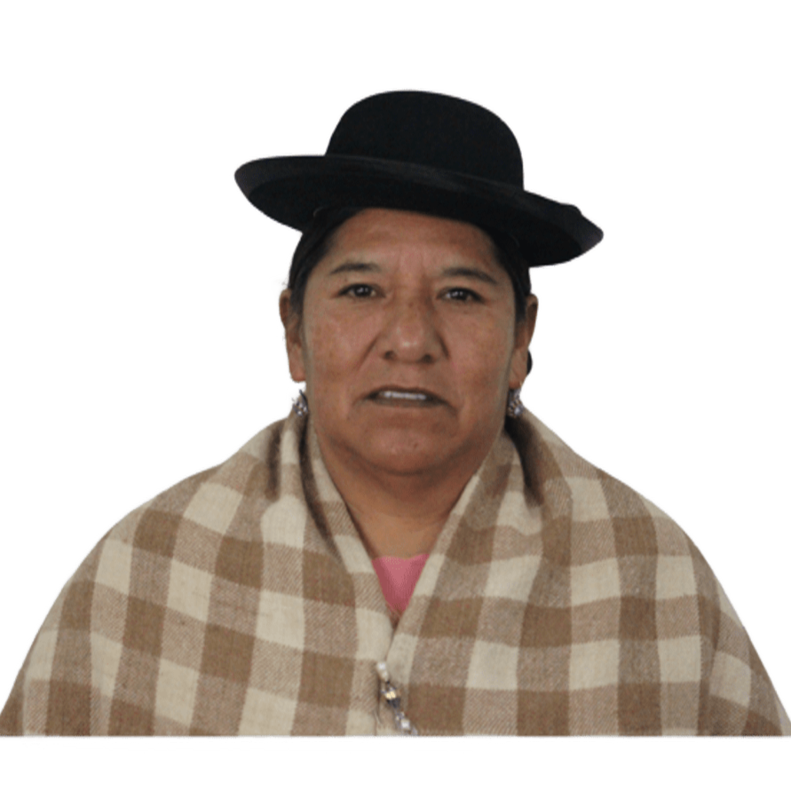
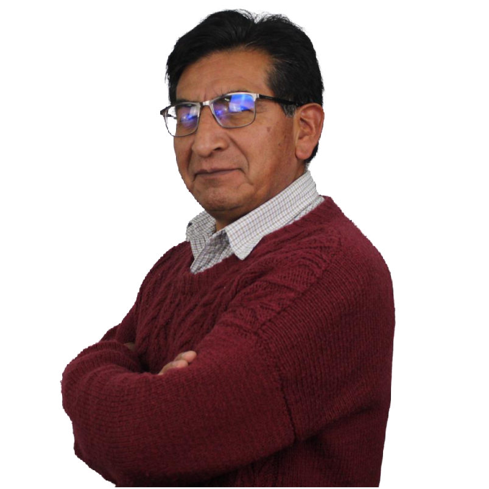
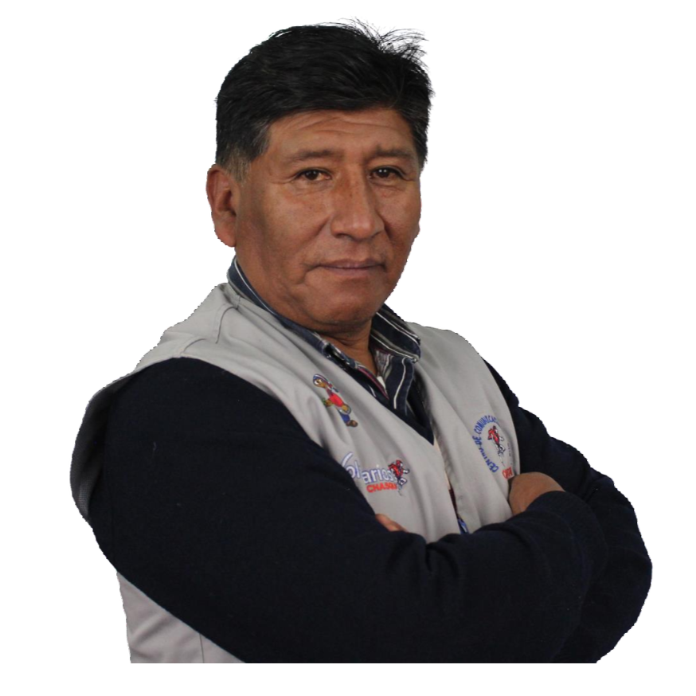
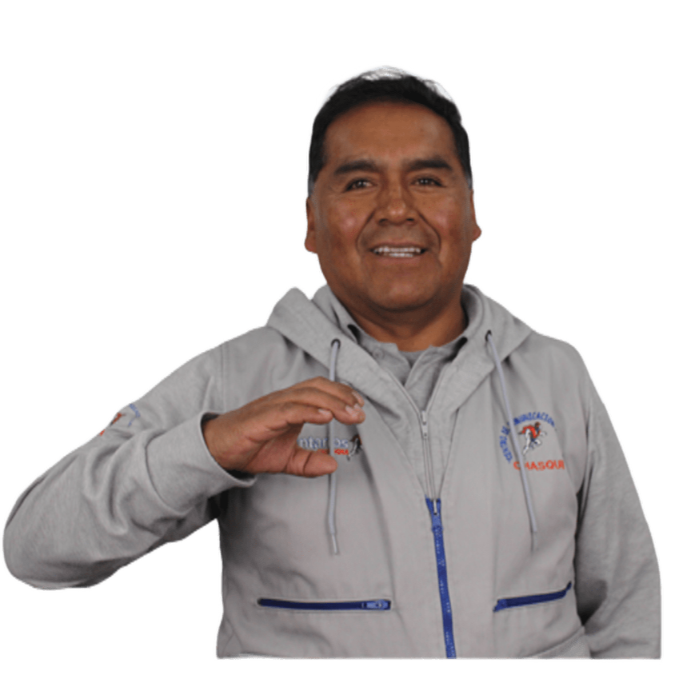
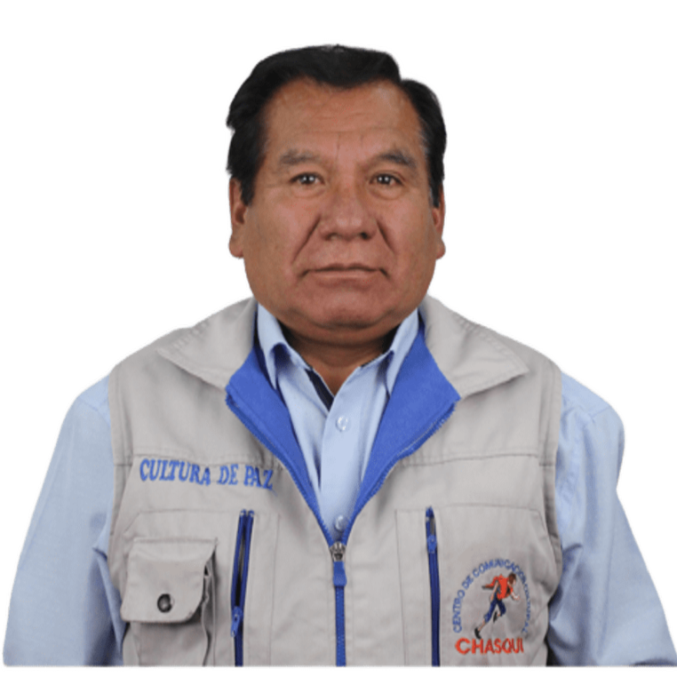
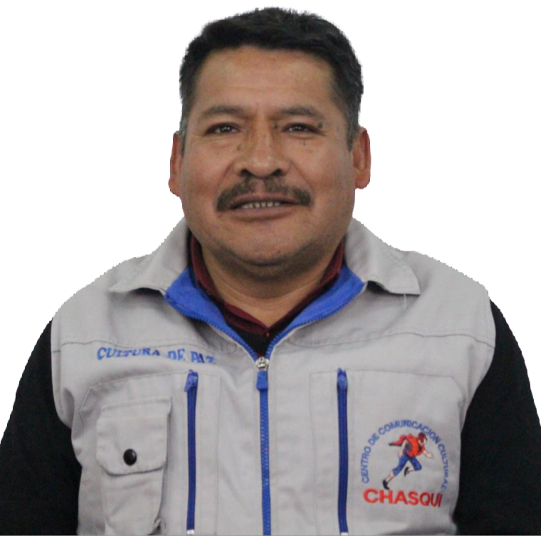
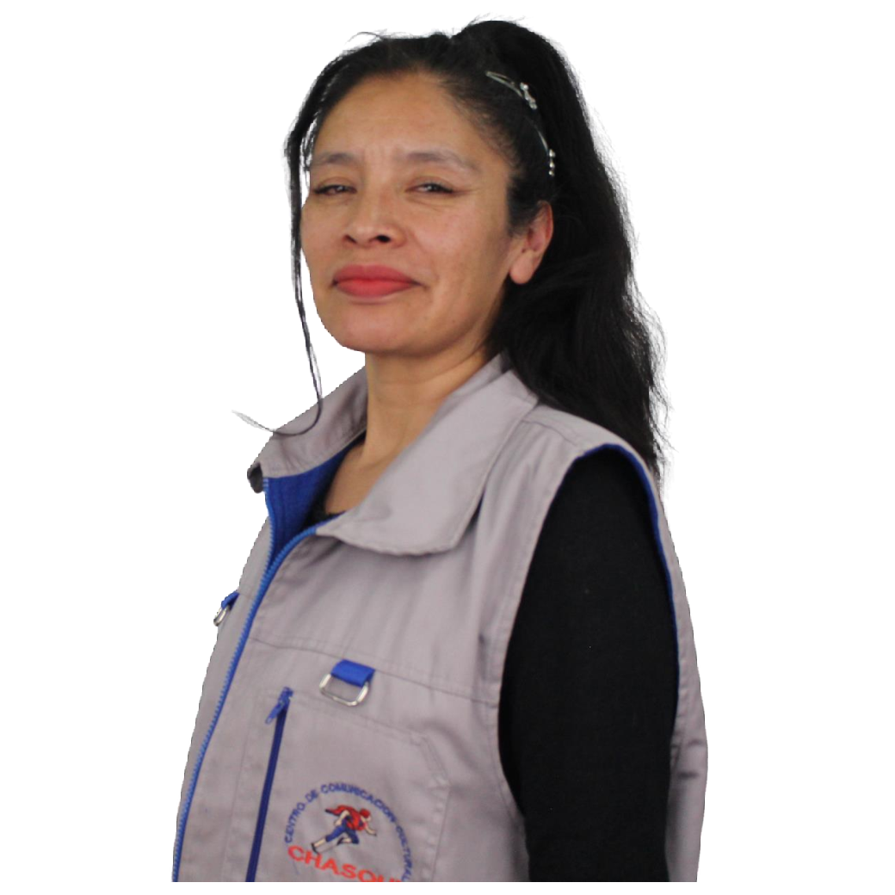
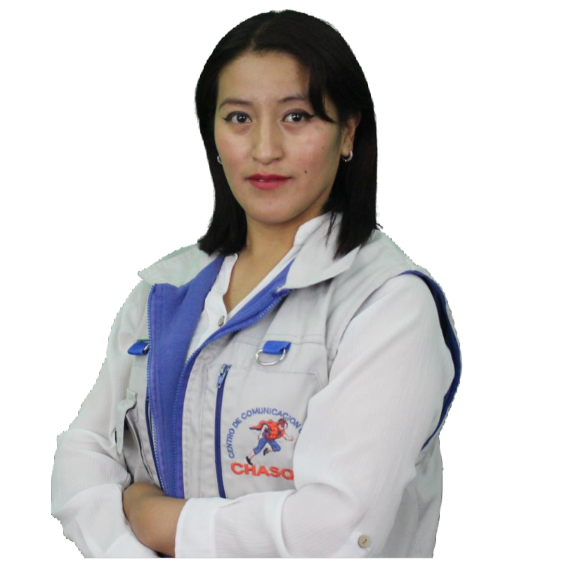
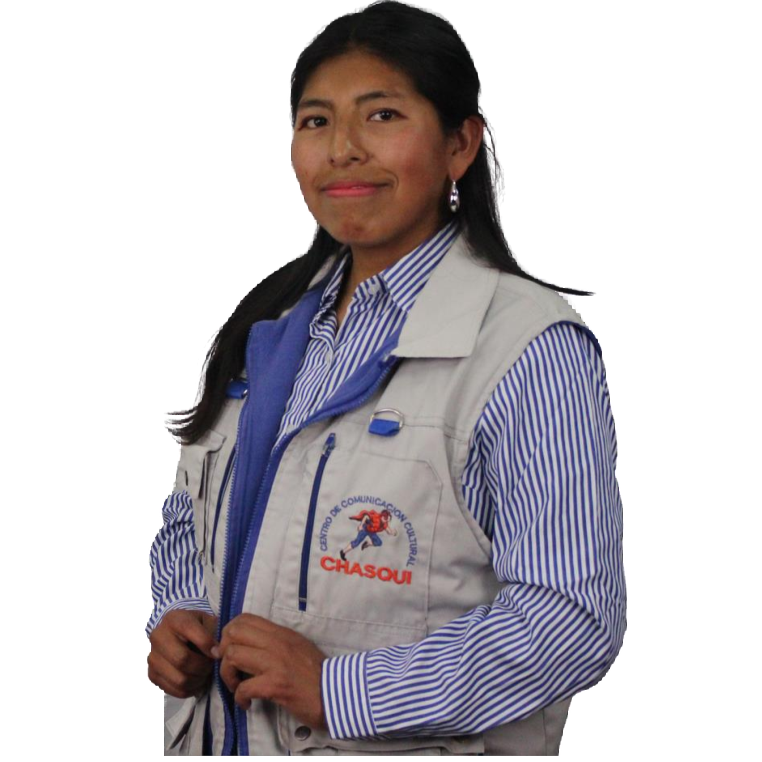

Somos Chasqui
Fundada en 1990
Nuestra misión
La misión institucional de Chasqui se orienta al fortalecimiento de las personas, la institución y el contexto social donde desarrolla su trabajo comunitario.
1988 Fundación de Chasqui Un grupo de jóvenes estudiantes de la UMSA funda el Centro de Comunicación Cultural Chasqui con el propósito de apoyar la superación académica y personal de estudiantes alteños. 1990 Primeras actividades organizadas Se desarrollan talleres, seminarios, festividades, encuentros juveniles y cursos de orientación vocacional, fortaleciendo el trabajo con jóvenes y comunidades de El Alto Norte. 1992 Construcción de un espacio propio Chasqui adquiere terrenos en la zona Estrellas de Belén, iniciando la construcción de sus primeros ambientes.con esfuerzo propio y trabajo. directo de sus miembros. 1999 Autosostenimiento institucional La institución se fortalece con recursos propios, actividades comunitarias y el compromiso voluntario de sus miembros activos. (2003) Nueva etapa de proyectos Se abre una etapa importante con el apoyo de organizaciones cooperantes, ampliando el trabajo educativo, social, cultural y comunitario. 2018 Memoria institucional de 30 años Se sistematiza la historia institucional mediante una memoria que recoge testimonios, experiencias, proyectos, aprendizajes y vivencias de Chasqui.
Misión
Centrada en los actores
Niñas, niños, adolescentes, jóvenes y sus familias son actores propositivos en la construcción de sus proyectos de vida, valorando su identidad colectiva, sus saberes culturales y la defensa de sus derechos.
Centrada en la institución
El Centro de Comunicación Cultural Chasqui está fortalecido, estructurado, organizado y sólido, con liderazgo de su personal comprometido, identidad cultural y capacidad profesional en gestión administrativa sostenible de proyectos.
Centrada en el contexto
El Departamento de La Paz con justicia social, democracia plena e identidad cultural, orientado al bienestar común y al vivir bien con el mundo que nos rodea.
Visión
Fortalecer la participación protagónica con reconocimiento social, generando liderazgos en las organizaciones locales del Departamento de La Paz rural y urbano, restableciendo valores culturales y la formación integral por el ejercicio de derechos a la educación formal e inclusiva, salud integral, medioambiente sano, equidad de género y cultura de paz, con niños, niñas, adolescentes, jóvenes y sus familias, para el vivir bien.

Más allá de
una palabra:
“tíos”
La fuerza detrás de nuestra misión
Equipo Chasqui
-

Adela Cruz Quispe
Directora Ejecutiva
-

Antonio Fredy Angulo Baltazar
Área Administrativa
-

Freddy Toledo Quispe
Coordinador Programa Desarrollo Local
-

Santos Oscar Condori Choque
Coordinador de Comunicación
-

Jorge Cruz Quispe
Coordinador Programa Cultura de Paz
-

Rodolfo Apoquinar Paja
Coordinador Proyecto CPAN
-

Coral Salazar Torrez
Cooperante Institucional de Arte
Personal Técnico
-

Lidia Jhaneth Quispe Quelale
Técnico Programa Desarrollo Local
-
Silvia Aduviri Choque
Técnico Programa Desarrollo Local
-
Yamel Jacqueline Quispe Ibañez
Técnico Proyecto CPAN
-

Paola Gabriela Quispe Quispe
Técnico Proyecto CPAN